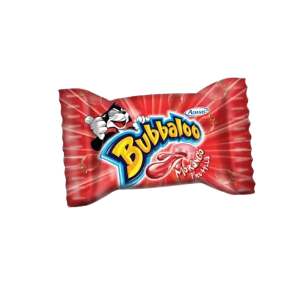

CHICLE BUBALU

El chicle Babalu, conocido como Bubbaloo, es famoso por su centro líquido y variedad de sabores, siendo un clásico de las golosinas en América Latina.

El chicle Babalu, conocido como Bubbaloo, es famoso por su centro líquido y variedad de sabores, siendo un clásico de las golosinas en América Latina.